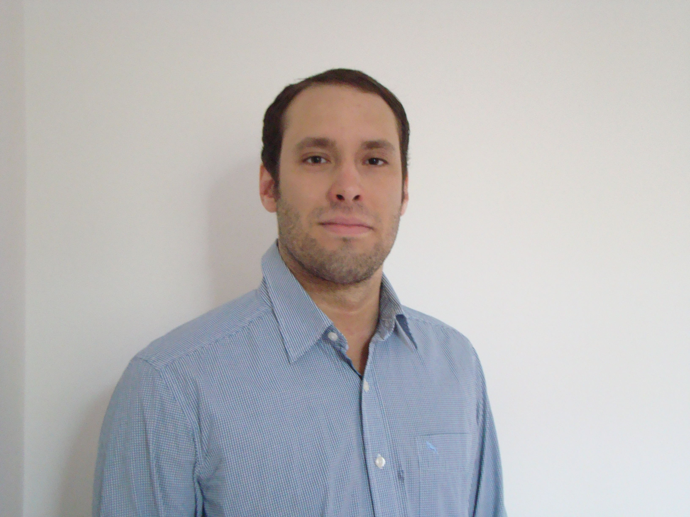

I am a postdoc under a Ramón y Cajal grant funded by the AEI, Spanish Research Agency, at the Algebra Department of the University of Sevilla.
Currently, I am looking for permanent positions. Please let me know if you hear about any possibilities.
From 2018 to 2025, I was a member of the working group of Prof. Chris Wendl at the Humboldt University Berlin (first as a visiting lecturer and later funded by the DFG, German Research Foundation).
This period was interrupted by two one-semester substitute professorships: 2023 at the Ruprecht-Karls-University Heidelberg in the working group of Prof. Peter Albers and 2024 at the Ruhr-University Bochum in the working group of Prof. Kai Zehmisch.
From September 2014 until July 2018 I was a member of the working group of Prof. Hansjörg Geiges at the University of Cologne, where I graduated in January 2017 with the dissertation "Legendrian knots in surgery diagrams and the knot complement problem".
Office:
Universidad de Sevilla
Facultad de Matemáticas
Dpto. de Álgebra
Reina Mercedes Avenue s/n
41012 Sevilla, Spain
E-mails: kegelmarc87@gmail.com or mkegel@us.es
Geometric topology: low dimensional topology, experimental mathematics, knot theory, 3-manifolds, smooth 4-manifolds, Dehn surgery, open books, Kirby calculus, Lefschetz fibrations, trisections and Heegaard splittings.
Differential topology: contact and symplectic geometry, Legendrian and transverse knot theory, Engel structures, Morse theory, hyperbolic geometry.
Naageswaran Manikandan, Ph.D. 2025 (joint supervision with Chris Wendl), now postdoc at the MPI Bonn.
Chun-Sheng Hsueh, Ph.D. student funded by the Claussen-Simon Stiftung, in progress.
David Suchodoll, Ph.D. student (joint supervision with Klaus Mohnke), in progress.
Supervised master and bachelor students
Working Group: Complexity Theory
Reading group: Condensed mathematics
A video illustrating that Haken's knot is isotopic to the unknot. This was created for a lecture on Differential Topology.
Knoty a program to generate interactive 3D animations of Legedrian knots and contact structures. This program was written by Stanislaus Stein during a lecture on Contact Geometry.
Lecture notes for the lecture 4-Manifolds and Kirby calculus.
Lecture notes for the lecture Topology of 3-manifolds.
Carolin Wengler's notes for the lecture Topologie I.
Connect Four on the Klein bottle (Vier gewinnt auf der Kleinschen Flasche)
You can also find me on: